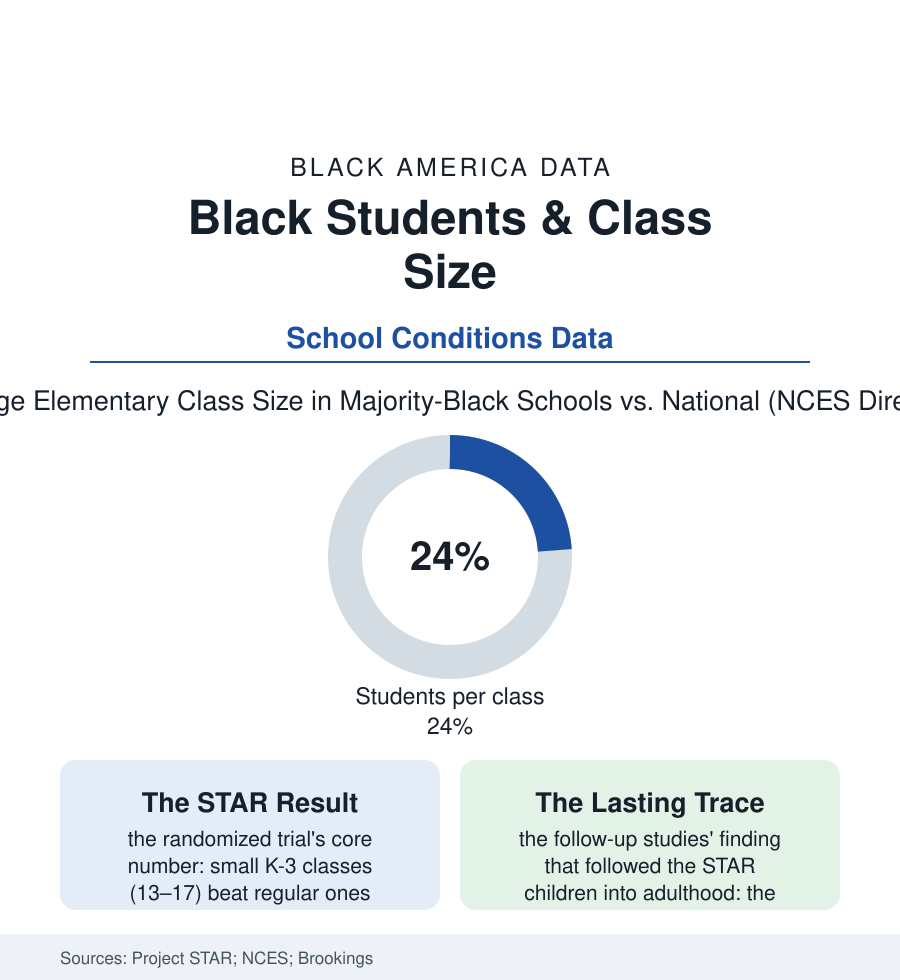

Black Education
Twenty-Two or Fifteen: The Class-Size Evidence
American education ran one true experiment on class size, in Tennessee — and its largest gains belonged to Black children in small rooms. The class-size file.

Education research is a swamp of correlations in which one study stands on bedrock: Tennessee's STAR experiment, which in the 1980s randomly assigned thousands of children to small or regular classes and followed them for decades. Its verdict is among the most replicated in the field — small early classes work, and they work roughly twice as well for Black and low-income children. This article reads the class-size file: the evidence, and the distribution of the thing itself. Few questions in the field can be answered with the words 'we randomized it' — this one can, and the answer has been sitting in the journals for thirty years.
What the Experiment Proved
The design is why STAR still anchors the argument: over eleven thousand students across Tennessee's districts — urban Memphis and Nashville classrooms central to its sample — assigned by lottery within their schools to small classes of thirteen to seventeen or regular classes of twenty-two to twenty-five, for up to four years, with the achievement read annually and the cohort traced into adulthood by the follow-up studies. The findings, stated at the literature's usual confidence and rarely granted to education interventions: the small-class children gained the equivalent of months of learning, the Black and low-income students' gains running about double the average, the Black-white test gap in the early grades narrowing by a magnitude the researchers computed at a third or more under sustained small classes — and the long tail in the adult data (the STAR children, small-class alumni, attending college at higher rates, the effect again concentrated among the Black students — a few years of a smaller room, legible in a life twenty years on). The mechanisms the classroom research supplies are the opposite of mysterious: the teacher's minutes redistributed (the feedback, the questions answered, the disruptions absorbed before they cascade — the discipline file's arithmetic improving with the denominator), the reading group's actual instruction replacing its management. STAR is the education file's standing rebuke to the claim that we do not know what works: we ran the experiment, on this population, and published the answer before many of today's teachers were born.
Who Actually Gets the Small Room
The provision data then perform the atlas's standard maneuver: class sizes in the national statistics run larger, on average, in the schools serving the most Black and low-income students (the pupil-teacher ratios and the average class sizes of the NCES tables sorting by the district's wealth through the staffing budget — the novice-teacher file's distribution compounding it, the largest classes and the least experienced teachers assigned to the same rooms in the staffing data's familiar double entry), the facilities file capping what even a willing district can do (the classroom count of an overcrowded building being a brick constraint — the portable classrooms of the urban schoolyard the physical form of the statistic). The policy history reads as the evidence's shadow: the class-size-reduction programs funded in waves (California's statewide K-3 reduction the largest test — its gains real but diluted, the evaluations finding, by the teacher file's shortage, the state hiring its way down the credential ladder to fill the new rooms, the lesson being that the small class and the strong teacher are a package the budget must buy together), the accountability era's quiet re-expansion of sizes as budgets tightened, and the pandemic's accidental demonstration (the hybrid and pod schedules' tiny groups producing, in several districts' internal data, the engagement reports the STAR alumni would recognize). The file's arithmetic is brutally simple and the budget offices know it: class-size reduction is among the most expensive interventions per student in the catalog, which is precisely the information its distribution carries — the nation spends its scarcest instructional resource, a teacher's divided attention, most thinly on the children the experiment proved gain most from its concentration.
Reading the Class-Size Data
Fifteen or twenty-five is not a scheduling detail; in the experimental record it is a measurable fraction of a child's education, assigned by budget to the children in an order the data lay bare. The STAR children are in their forties now. Their smaller rooms are the best-documented bargain American education ever measured and declined, at scale, to buy.
More in Black Education
Black Educational Attainment: High School Parity, the College Gap
About 89 percent of Black adults hold a high school diploma and one in four holds a bachelor's degree or higher — the attainment ladder, the college completion gap, and the generational trend.
Historically Black Colleges and Universities: Enrollment and Degrees
More than 100 HBCUs enroll roughly 290,000 students and award about one in six Black bachelor's degrees — an outsized share from a small sector. The federal education data.
Black College Enrollment: 2.4 Million Students
About 2.4 million Black students are enrolled in American colleges — nearly two-thirds of them women. The NCES enrollment data by sector, level, and trend.
Source: Tennessee STAR experiment (Project STAR); National Center for Education Statistics class-size data; Brookings Institution education research; Education Finance research.